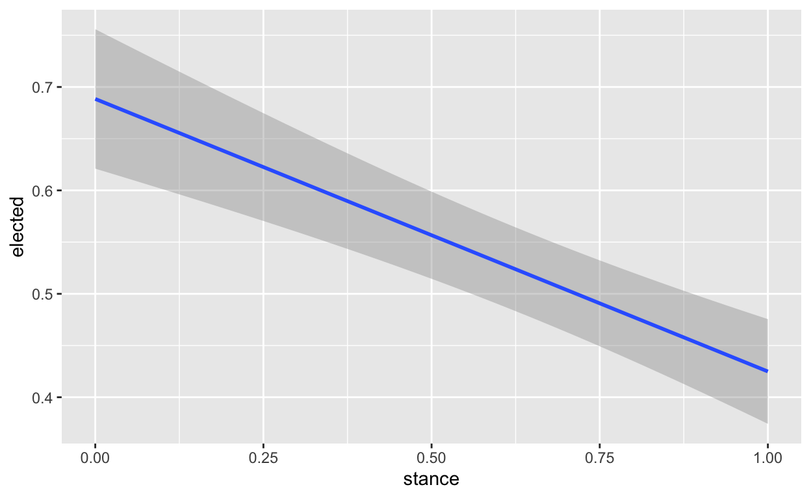

The final report will include the following sections: (1) an introduction where you introduce the research question and hypothesis and briefly describe why it is interesting; (2) a data section that briefly describes the data source, describes how the key dependent and independent variables are measured (e.g., a survey, statistical model, or expert coding), and also produces a plot that summarizes the dependent variable; (3) a results section that contains a scatterplot, barplot, or boxplot of the main relationship of interest and output for the main regression of interest; and (4) a brief (one paragraph) concluding section that summarizes your results, assesses the extent to which you find support for your hypothesis, describes limitations of your analysis and threats to inference, and states how your analysis could be improved (e.g., improved data that would be useful to collect).
For the data section, you should note if your research design is cross-sectional (most projects will be of this type) or one of the other designs we discussed (randomized experiment, before-and-after, differences-in-differences). For the results section, you should interpret (in plain English) the main coefficient of interest in your regression. You should also comment on the statistical significance of the estimated coefficient and whether or not you believe the coefficient to represent a causal effect.
Here is a rubric for the the core components of the final project:
Introduction: describe the research question and main hypothesis; describe why it is important. (1-2 paragraphs) (2pts) Data section: 2-3 paragraphs + plot visualizing main outcome of interest. (3pts) Results section: plot of main analysis + regression output + 2-3 paragraphs of description and interpretation of the plots and regression (including interpreting the main coefficient of interest and describing if it is statistically significant and if we should interpret it causally). This section could be longer if you choose to include additional analyses. (8pts) Conclusion section: 1 paragraph (i) summarizing results and assessing the extent to which you find support for your hypothesis; (ii) describing limitations of the analysis and threats to inference (missing data, confounding, etc), and stating how you could improve your analysis if you had more time/money. (2pts) To earn full credit on the visualizations and regression output, they should use informative labels and names and have a small number of digits presented. Tables should use kable or modelsummary to format output nicely. Generally speaking, the final report should mostly be readable by a person who hasn’t taken Gov 50.
That adds up to 15 out of 16 points. We reserve one point for students going above and beyond the basic requirements. This “great work” point can be earned in many ways:
Using different datasets that must be merged before use. Presenting additional analyses that investigate the relationship further in terms of possible confounders or alternative explanations. Aesthetically pleasing visualizations (above and beyond what we learned in class) Maps Use of other packages not reviewed in class (excluding those for importing data) Clean code (i.e., proper indentation, naming chunks) No raw R output (all “prints” using kable or kable like functions)
Project thoughts
Research Question: What is the relationship between a Republican candidate’s stance on the 2020 election and their electoral success? In other words, consider how a Republican candidate’s denial of the 2020 election results relates to their electoral success.
For future: be more specific about the offices I’m refering to and word the research question better
Formulate a hypothesis related to the research question. This hypothesis should be rooted in some sort of theory. In other words, you need to present a plausible story why the hypothesis might be true. Often, this is in the form of a behaviorial or institutional explanation. As social scientists, we are not interested in idiosyncratic explanations; we want to understand systematic patterns and relationships!
In Republican-leaning states, Republican candidates who deny the 2020 election results have greater electoral success and the opposite occurs in democratic-leaning states. [concede that this system is not perfect bc it is the aggregate of the state and we know that states can be politically fragmented with some urban centers being much more liberal than rural place maybe even use IL as an example]
Describe your explanatory variable(s) of interest and how it is measured. Importantly, we need to observe variation in this variable in order to study it!
The explanatory variable of interest is the Republican candidate’s stance on the 2020 election results. It is a categorical variable measured “Candidates in the “Fully denied” category have explicitly said the 2020 election was illegitimate and/or took legal measures to try and overturn the election. Examples of the latter include members of Congress who voted against certifying election results or politicians who signed an amicus brief for a Texas lawsuit that challenged election results in four states President Biden won. Candidates in the “Raised questions” category raised questions or concerns about the election but haven’t outright denied or affirmed it. Candidates in the “Accepted with reservations” category have accepted Biden’s victory but have still raised questions or concerns about fraud. Candidates in the “Fully accepted” category have accepted Biden’s victory without reservations. Candidates in the “Avoided answering” category refused or avoided directly answering questions about the election (e.g., by changing the subject when asked about it). Candidates in the “No comment” category have not made a public comment on the election (as far as we could tell) and did not respond to our inquiries on the topic.” https://github.com/fivethirtyeight/data/tree/master/election-deniers
Describe your outcome variable of interest and how it is measured. The outcome variable of interest is whether or not the Republican candidate won their race.
What observed pattern in the data would provide support for your hypothesis? More importantly, what observed pattern would disprove your hypothesis?
Introduction: describe the research question and main hypothesis; describe why it is important. (1-2 paragraphs) (2pts) Data section: 2-3 paragraphs + plot visualizing main outcome of interest. (3pts)
I want to investigate the relationship between the stance a Republican candidate takes on the results of the 2020 election and their electoral success in the 2022 general elections? How does the partisan lean of the state affect the answer to this question?
Results section: plot of main analysis + regression output + 2-3 paragraphs of description and interpretation of the plots and regression (including interpreting the main coefficient of interest and describing if it is statistically significant and if we should interpret it causally). This section could be longer if you choose to include additional analyses. (8pts) Conclusion section: 1 paragraph (i) summarizing results and assessing the extent to which you find support for your hypothesis; (ii) describing limitations of the analysis and threats to inference (missing data, confounding, etc), and stating how you could improve your analysis if you had more time/money. (2pts)
[finish later]
election_data <- election_deniers |>
select(Stance, `Dem or Rep State`, `Won or Lost their Race`, `The FiveThirtyEight partisan lean of every state`)
election_data <-
rename(election_data, President = `Dem or Rep State`) |>
rename(Elected_or_not = `Won or Lost their Race`) |>
rename(State_partisan_lean = `The FiveThirtyEight partisan lean of every state`)
election_data# A tibble: 552 × 4
Stance President Elected_or_not State_partisan_lean
<chr> <chr> <chr> <dbl>
1 Fully denied Trump Elected 29.6
2 Fully denied Trump Elected 29.6
3 Fully denied Trump Elected 29.6
4 Fully denied Trump Elected 29.6
5 Fully denied Trump Elected 29.6
6 Fully denied Trump Elected 29.6
7 Fully denied Trump Elected 29.6
8 Raised questions Trump Not Elected 29.6
9 Fully denied Trump Elected 29.6
10 Accepted with reserva… Trump Elected 29.6
# ℹ 542 more rowsI ran a 2-sample permutation test to compare the proportion of Republican candidates in the 2022 general elections who denied versus accepted the results of the 2020 election and their electoral success in the 2022 general election. For the purpose of simplifying the categorical variable Stance, I made it a binary variable where if candidates fully denied or raised questions, essentially did not accept the results fully, were categorized as having denied the results of the 2020 election.
election_prop <- election_data |>
mutate(partisan_leaning = if_else(State_partisan_lean >= 0, "Conservative Leaning", "Liberal Leaning"),
elected = if_else(Elected_or_not == "Elected", 1, 0),
stance = if_else(Stance == "Fully denied" | Stance == "Raised questions", "Denied", "Accepted")) |>
group_by(stance) |>
summarise(elected_prop = mean(elected))
knitr::kable(election_prop, col.names = c("Stance", "Prop. of Rep. Candidates Elected"))| Stance | Prop. of Rep. Candidates Elected |
|---|---|
| Accepted | 0.4349315 |
| Denied | 0.6153846 |
election_data_modified <- election_data |>
mutate(partisan_leaning = if_else(State_partisan_lean >= 0, "Conservative Leaning", "Liberal Leaning"),
elected = if_else(Elected_or_not == "Elected", "1", "0"),
stance = if_else(Stance == "Fully denied" | Stance == "Raised questions", "Denied", "Accepted")) |>
specify(elected ~ stance, success = "1") |>
calculate(stat = "diff in props", order = c("Denied", "Accepted"))
knitr::kable(election_data_modified, col.names = c("Difference in Proportion of Electeds by Stance (Denied prop. - Accepted Prop.)"))| Difference in Proportion of Electeds by Stance (Denied prop. - Accepted Prop.) |
|---|
| 0.1804531 |
set_hypothesis <- election_data |>
mutate(elected = if_else(Elected_or_not == "Elected", "1", "0"),
stance = if_else(Stance == "Fully denied" | Stance == "Raised questions", "Denied", "Accepted")) |>
specify(elected ~ stance, success = "1") |>
hypothesize(null = "independence")
null_dist <- set_hypothesis |>
specify(elected ~ stance, success = "1") |>
hypothesize(null = "independence") |>
generate(reps = 1000, type = "permute") |>
calculate(stat = "diff in props", order = c("Denied", "Accepted"))
null_dist |>
visualize() +
labs(
x = "Diff. in Prop.",
y = "Count",
title = "Simulation-Based Null Distribution of Diff. in Prop."
)-1.png)
pval <- null_dist |>
get_p_value(obs_stat = election_data_modified, direction = "both")
knitr::kable(pval)| p_value |
|---|
| 0 |
# Create a boxplot using ggplot and dplyr
election_data |>
mutate(stance = if_else(Stance == "Fully denied" | Stance == "Raised questions", "Denied", "Accepted")) |>
filter(stance == "Denied") |>
ggplot(aes(x = Elected_or_not, y = State_partisan_lean, fill = Elected_or_not)) +
geom_boxplot() +
labs(title = "Elecion Deniers: State Partisan Lean vs Election Outcome", x = "Elected or not", y = "State Partisan Lean")
contingency_table <- table(election_data$Stance, election_data$Elected_or_not)
knitr::kable(contingency_table)| Elected | Not Elected | |
|---|---|---|
| Accepted with reservations | 58 | 35 |
| Avoided answering | 4 | 14 |
| Fully accepted | 44 | 33 |
| Fully denied | 137 | 62 |
| No comment | 21 | 83 |
| Raised questions | 23 | 38 |
mosaic_chart <- election_data |>
mutate(stance = if_else(Stance == "Fully denied" | Stance == "Raised questions", "Denied", "Accepted")) |>
ggplot(aes(x = Elected_or_not, fill = stance)) +
geom_bar(position = "fill") +
coord_flip() +
labs(title = "Electoral Success by Stance",
x = "Electoral Success",
y = "Proportion",
fill = "Stance")
mosaic_chart
regression <- election_data |>
mutate(elected = if_else(Elected_or_not == "Elected", 1, 0),
stance = if_else(Stance == "Fully denied" | Stance == "Raised questions", 0, 1),
state = election_deniers$State,
incumbency = election_deniers$Incumbent,
office = election_deniers$Office,
president = election_deniers$`Dem or Rep State`,
)
fit <- glm(elected ~ stance + President + incumbency + state + office , regression, family = "binomial")
s <- summary(fit)$coefficients
s Estimate Std. Error z value
(Intercept) -1.75466375 1.4893263 -1.178159395
stance -0.32266882 0.3896752 -0.828045531
PresidentTrump 2.17111593 1.6207589 1.339567518
incumbencyYes 6.32026881 0.7402381 8.538156068
stateAlaska -4.52074054 2.5129882 -1.798950178
stateArizona 0.01698528 1.3445025 0.012633134
stateArkansas 17.29829126 2868.0132604 0.006031454
stateCalifornia -1.40056691 1.2689017 -1.103763103
stateColorado -2.40292216 1.9741855 -1.217171440
stateConnecticut -18.18889002 3498.2148899 -0.005199478
stateDelaware -17.78750018 7462.3433967 -0.002383635
stateFlorida -1.59439954 1.3599252 -1.172417061
stateGeorgia 0.07959312 1.3587613 0.058577701
stateHawaii -18.35597234 5302.1518387 -0.003461985
stateIdaho 17.48474675 3299.0372878 0.005299954
stateIllinois -2.71810861 1.8045471 -1.506255260
stateIndiana -0.27778859 1.5252722 -0.182123939
stateIowa 17.27604133 2869.7943998 0.006019958
stateKansas -1.24797207 1.7833699 -0.699783089
stateKentucky -2.98316684 2.7451391 -1.086708825
stateLouisiana -3.24348226 2.6664664 -1.216397211
stateMaine -18.17155804 6192.2349995 -0.002934572
stateMaryland -3.17655914 2.3947770 -1.326452988
stateMassachusetts -18.06079523 3214.8344764 -0.005617955
stateMichigan -2.21107311 1.7632626 -1.253967018
stateMinnesota -1.94311121 1.9782311 -0.982246815
stateMississippi -0.83557555 1.8745020 -0.445758688
stateMissouri -0.68240345 1.5239126 -0.447796974
stateMontana 17.29115238 5691.7247243 0.003037946
stateNebraska 17.71100591 3300.8755187 0.005365548
stateNevada -0.55237094 1.5383193 -0.359074302
stateNew Hampshire -2.29162906 2.5627381 -0.894211194
stateNew Jersey -0.77597015 1.4997754 -0.517390894
stateNew Mexico -22.40461885 3369.8041052 -0.006648641
stateNew York 0.57255581 1.1793050 0.485502734
stateNorth Carolina -2.20329485 1.4528845 -1.516496927
stateNorth Dakota 17.21047846 4056.9799835 0.004242190
stateOhio -2.44750191 1.5761928 -1.552793492
stateOklahoma 17.12037269 2642.8136940 0.006478085
stateOregon -0.56969134 1.5413955 -0.369594525
statePennsylvania -2.06586719 1.6634352 -1.241928239
stateRhode Island -17.82704536 4748.9116339 -0.003753922
stateSouth Carolina -0.80996027 1.8599038 -0.435485036
stateSouth Dakota 17.71189472 3605.2262811 0.004912839
stateTennessee -0.97273251 1.8487002 -0.526171035
stateTexas -1.97853528 1.3493313 -1.466307995
stateUtah 12.29441127 4777.5631093 0.002573364
stateVermont 0.25599250 1.6113158 0.158871708
stateVirginia -0.31013126 1.5164099 -0.204516772
stateWashington -2.58454623 2.0240907 -1.276892486
stateWest Virginia 12.24161713 7604.2356002 0.001609842
stateWyoming 17.87966195 5024.9705697 0.003558163
officeGovernor 0.19911543 1.4204655 0.140176180
officeRepresentative 0.58773040 1.1477817 0.512057633
officeSecretary of state 0.31653419 1.4642239 0.216178810
officeSenator 1.45546944 1.2833863 1.134085237
Pr(>|z|)
(Intercept) 2.387331e-01
stance 4.076447e-01
PresidentTrump 1.803860e-01
incumbencyYes 1.363806e-17
stateAlaska 7.202656e-02
stateArizona 9.899205e-01
stateArkansas 9.951876e-01
stateCalifornia 2.696959e-01
stateColorado 2.235390e-01
stateConnecticut 9.958514e-01
stateDelaware 9.980981e-01
stateFlorida 2.410297e-01
stateGeorgia 9.532885e-01
stateHawaii 9.972377e-01
stateIdaho 9.957713e-01
stateIllinois 1.320017e-01
stateIndiana 8.554855e-01
stateIowa 9.951968e-01
stateKansas 4.840628e-01
stateKentucky 2.771655e-01
stateLouisiana 2.238336e-01
stateMaine 9.976586e-01
stateMaryland 1.846897e-01
stateMassachusetts 9.955175e-01
stateMichigan 2.098540e-01
stateMinnesota 3.259783e-01
stateMississippi 6.557716e-01
stateMissouri 6.542997e-01
stateMontana 9.975761e-01
stateNebraska 9.957189e-01
stateNevada 7.195395e-01
stateNew Hampshire 3.712089e-01
stateNew Jersey 6.048833e-01
stateNew Mexico 9.946952e-01
stateNew York 6.273198e-01
stateNorth Carolina 1.293937e-01
stateNorth Dakota 9.966152e-01
stateOhio 1.204725e-01
stateOklahoma 9.948313e-01
stateOregon 7.116846e-01
statePennsylvania 2.142630e-01
stateRhode Island 9.970048e-01
stateSouth Carolina 6.632104e-01
stateSouth Dakota 9.960801e-01
stateTennessee 5.987694e-01
stateTexas 1.425644e-01
stateUtah 9.979468e-01
stateVermont 8.737700e-01
stateVirginia 8.379497e-01
stateWashington 2.016402e-01
stateWest Virginia 9.987155e-01
stateWyoming 9.971610e-01
officeGovernor 8.885208e-01
officeRepresentative 6.086107e-01
officeSecretary of state 8.288484e-01
officeSenator 2.567588e-01modelsummary::modelsummary(fit)| (1) | |
|---|---|
| (Intercept) | −1.755 |
| (1.489) | |
| stance | −0.323 |
| (0.390) | |
| PresidentTrump | 2.171 |
| (1.621) | |
| incumbencyYes | 6.320 |
| (0.740) | |
| stateAlaska | −4.521 |
| (2.513) | |
| stateArizona | 0.017 |
| (1.345) | |
| stateArkansas | 17.298 |
| (2868.013) | |
| stateCalifornia | −1.401 |
| (1.269) | |
| stateColorado | −2.403 |
| (1.974) | |
| stateConnecticut | −18.189 |
| (3498.215) | |
| stateDelaware | −17.788 |
| (7462.343) | |
| stateFlorida | −1.594 |
| (1.360) | |
| stateGeorgia | 0.080 |
| (1.359) | |
| stateHawaii | −18.356 |
| (5302.152) | |
| stateIdaho | 17.485 |
| (3299.037) | |
| stateIllinois | −2.718 |
| (1.805) | |
| stateIndiana | −0.278 |
| (1.525) | |
| stateIowa | 17.276 |
| (2869.794) | |
| stateKansas | −1.248 |
| (1.783) | |
| stateKentucky | −2.983 |
| (2.745) | |
| stateLouisiana | −3.243 |
| (2.666) | |
| stateMaine | −18.172 |
| (6192.235) | |
| stateMaryland | −3.177 |
| (2.395) | |
| stateMassachusetts | −18.061 |
| (3214.834) | |
| stateMichigan | −2.211 |
| (1.763) | |
| stateMinnesota | −1.943 |
| (1.978) | |
| stateMississippi | −0.836 |
| (1.875) | |
| stateMissouri | −0.682 |
| (1.524) | |
| stateMontana | 17.291 |
| (5691.725) | |
| stateNebraska | 17.711 |
| (3300.876) | |
| stateNevada | −0.552 |
| (1.538) | |
| stateNew Hampshire | −2.292 |
| (2.563) | |
| stateNew Jersey | −0.776 |
| (1.500) | |
| stateNew Mexico | −22.405 |
| (3369.804) | |
| stateNew York | 0.573 |
| (1.179) | |
| stateNorth Carolina | −2.203 |
| (1.453) | |
| stateNorth Dakota | 17.210 |
| (4056.980) | |
| stateOhio | −2.448 |
| (1.576) | |
| stateOklahoma | 17.120 |
| (2642.814) | |
| stateOregon | −0.570 |
| (1.541) | |
| statePennsylvania | −2.066 |
| (1.663) | |
| stateRhode Island | −17.827 |
| (4748.912) | |
| stateSouth Carolina | −0.810 |
| (1.860) | |
| stateSouth Dakota | 17.712 |
| (3605.226) | |
| stateTennessee | −0.973 |
| (1.849) | |
| stateTexas | −1.979 |
| (1.349) | |
| stateUtah | 12.294 |
| (4777.563) | |
| stateVermont | 0.256 |
| (1.611) | |
| stateVirginia | −0.310 |
| (1.516) | |
| stateWashington | −2.585 |
| (2.024) | |
| stateWest Virginia | 12.242 |
| (7604.236) | |
| stateWyoming | 17.880 |
| (5024.971) | |
| officeGovernor | 0.199 |
| (1.420) | |
| officeRepresentative | 0.588 |
| (1.148) | |
| officeSecretary of state | 0.317 |
| (1.464) | |
| officeSenator | 1.455 |
| (1.283) | |
| Num.Obs. | 552 |
| AIC | 332.5 |
| BIC | 574.1 |
| Log.Lik. | −110.247 |
| RMSE | 0.24 |
fit
Call: glm(formula = elected ~ stance + President + incumbency + state +
office, family = "binomial", data = regression)
Coefficients:
(Intercept) stance
-1.75466 -0.32267
PresidentTrump incumbencyYes
2.17112 6.32027
stateAlaska stateArizona
-4.52074 0.01699
stateArkansas stateCalifornia
17.29829 -1.40057
stateColorado stateConnecticut
-2.40292 -18.18889
stateDelaware stateFlorida
-17.78750 -1.59440
stateGeorgia stateHawaii
0.07959 -18.35597
stateIdaho stateIllinois
17.48475 -2.71811
stateIndiana stateIowa
-0.27779 17.27604
stateKansas stateKentucky
-1.24797 -2.98317
stateLouisiana stateMaine
-3.24348 -18.17156
stateMaryland stateMassachusetts
-3.17656 -18.06080
stateMichigan stateMinnesota
-2.21107 -1.94311
stateMississippi stateMissouri
-0.83558 -0.68240
stateMontana stateNebraska
17.29115 17.71101
stateNevada stateNew Hampshire
-0.55237 -2.29163
stateNew Jersey stateNew Mexico
-0.77597 -22.40462
stateNew York stateNorth Carolina
0.57256 -2.20329
stateNorth Dakota stateOhio
17.21048 -2.44750
stateOklahoma stateOregon
17.12037 -0.56969
statePennsylvania stateRhode Island
-2.06587 -17.82705
stateSouth Carolina stateSouth Dakota
-0.80996 17.71189
stateTennessee stateTexas
-0.97273 -1.97854
stateUtah stateVermont
12.29441 0.25599
stateVirginia stateWashington
-0.31013 -2.58455
stateWest Virginia stateWisconsin
12.24162 NA
stateWyoming officeGovernor
17.87966 0.19912
officeRepresentative officeSecretary of state
0.58773 0.31653
officeSenator
1.45547
Degrees of Freedom: 551 Total (i.e. Null); 496 Residual
Null Deviance: 764.4
Residual Deviance: 220.5 AIC: 332.5fitting null model for pseudo-r2 McFadden
0.7115314 ggplot(regression, mapping = aes(x = stance, y = elected)) + geom_smooth(method = "lm")